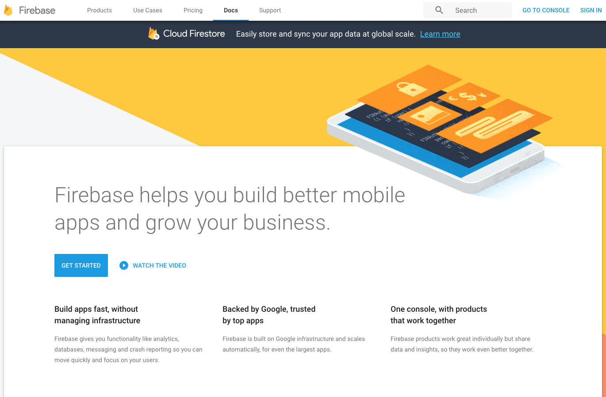
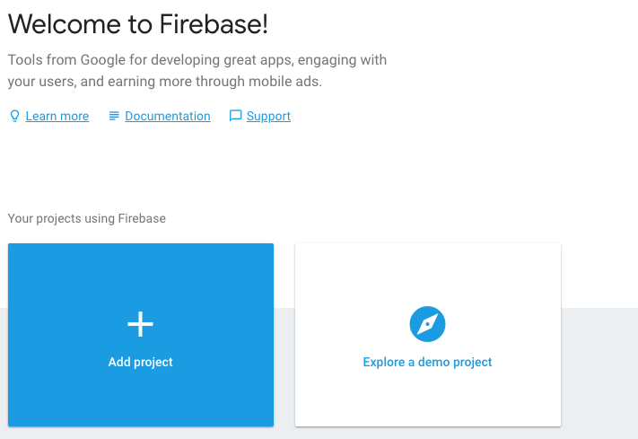
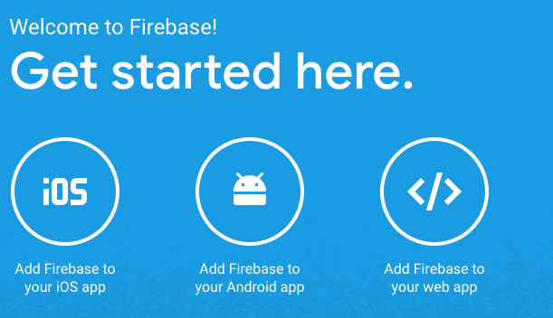
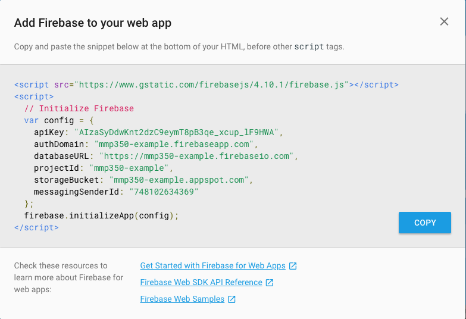
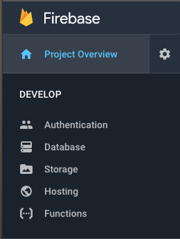
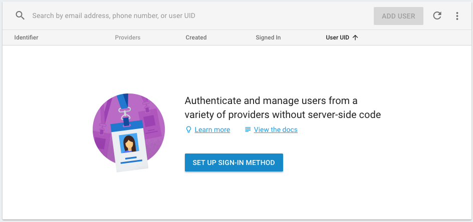
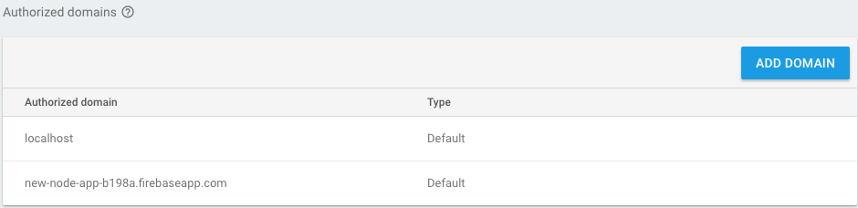
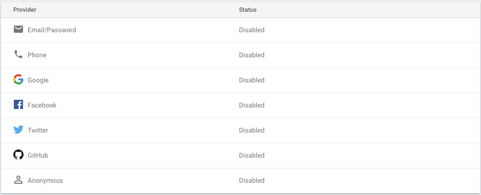

This week we're going to add Firebase to our application.
Firebase is a Google product that will let us create dynamic websites connected to a database and host them all for free (up to 5 projects).
Firebase has a nice visual interface that I think helps demystify (make less mysterious) what happens in a database.
We need to start by making a Firebase account at firebase.google.com.
If you already have a Google account this will be pretty easy.
If you don't have one you will need to create one now.
When you're get your account set up, start by clicking "Add Project" from the main Firebase page, console.firebase.google.com.
Take a moment to explore the site and the services that are available.
When you're ready, click the "Add Firebase to Your Web App" button.
A window will pop up with some info you can add to your app to connect with Firebase.
You'll notice that code looks like something you would add to the front end or an HTML page.
This is part of what makes Firebase awesome. Instead of doing authentication and other security based things in our own server code, Firebase is going to handle most of that work for us.
Paste that code into the home.ejs template file, in the <head> section.
<head>
<meta charset="UTF-8">
<title>New Node App</title>
<link rel='stylesheet' href='/style.css'>
<script src="https://www.gstatic.com/firebasejs/4.10.1/firebase.js"></script>
<script>
// Initialize Firebase
var config = {
apiKey: "yourAPIkey",
authDomain: "your-project.firebaseapp.com",
databaseURL: "https://your-project.firebaseio.com",
projectId: "your-project",
storageBucket: "your-project.appspot.com",
messagingSenderId: "youMessagingID"
};
firebase.initializeApp(config);
</script>
</head>Back in the Firebase console, let's set up some authentication.
Click on the Authentication item under Develop.
This is where we will manage users of our application.
This interface allows us to create multiple types of authentication and manage users.
We can also set the domains that will be allowed to interact with our app.
The defaults should be fine here. localhost is where we are developing the app and the Firebase URL is where we will eventually push the app.
We're going to start by adding email provider. This is a simple authentication method. We will ignore the other methods but feel free to try adding them if you like.
Okay, no we're ready to update our code to add users.
Return to home.ejs. We're going to add a basic Firebase function to determine if a user is logged in or not.
This goes in a <script> tag at the bottom of the document, right before </body>
firebase.auth().onAuthStateChanged(function(user) {
if (user) {
console.log(user);
} else {
console.log("no user")
}
});We don't have users yet so this should just log "no user" to the console.
We're going to make links for the user to log in or create and account, with routes for each.
Let's add the links to home.ejs.
<a href="/login">Login</a>
<a href="/create">Create</a>Add the routes in server.js.
app.get('/login', function(request, response){
response.render('login.ejs');
});
app.get('/create', function(request, response){
response.render('create.ejs');
});We have a template from last week for login.ejs so we just need to duplicate it to create a create.ejs.
We also need to add the Firebase code that we added in the <head> section of home.ejs in both of these. (We'll use better templates to fix this soon).
Let's start with create.ejs since we need a user to login.
We need some text inputs and a button for the user to submit their info. We're not using a <form> here because Firebase is handling the backend.
<div id="create">
<input type="text" placeholder="Enter name" id="nameInput">
<input type="text" placeholder="Enter email" id="emailInput">
<input type="password" placeholder="Enter password" id="passwordInput">
<button onclick={createUser()}>Create Account</button>
<p id="error"></p>
</div>There's also an error message paragraph in case there are errors.
When the user click the button, we need to capture their name, email and password and create a new user.
If the user is successfully created, we return to the home page. If not, we give an error.
function createUser() {
let email = emailInput.value;
let password = passwordInput.value;
firebase.auth().createUserWithEmailAndPassword(email, password)
.then(function(user) {
console.log(user);
user.updateProfile({
displayName: nameInput.value
}).then(function(user) {
location.href = "/";
}, function(error) {
console.log('error', error);
});
}) // no semi-color here, .catch is next in Promise chain
.catch(function(error) {
console.log(error);
const errorMessage = document.getElementById("error");
errorMessage.textContent = error.message;
});
}Now that we have a user, let's display the user name.
Back in home.ejs add a div to display the user name.
<div id="display-name"></div>Then, inside of the if (user) { ... } statement, add these lines to get the displayName from the user object from Firebase and add it to the div.
const userName = document.getElementById("display-name");
userName.textContent = "Welcome, " + user.displayName;We also need to make it possible for the user to log out.
Add a sign out button on home.ejs and a function inside the script to sign out.
<button onclick={signOut()}>Sign Out</button>function signOut() {
firebase.auth().signOut();
location.reload();
}So once a user logs out, they need to log in! Almost done. Open login.ejs.
This is very similar to create.ejs.
<div id="login">
<input type="text" placeholder="Enter email" id="emailInput">
<input type="password" placeholder="Enter password" id="passwordInput">
<button onclick="{signIn()}">Sign in</button>
<p id="errorMessage"></p>
</div>function signIn() {
const email = emailInput.value;
const password = passwordInput.value;
firebase.auth().signInWithEmailAndPassword(email, password)
.then(function(user) {
location.href = "/";
})
.catch(function(error) {
console.log(error);
const errorMessage = document.getElementById("errorMessage");
errorMessage.textContent = error.message;
});
}
}Okay, that was a lot of work, but now we can login in our users.
By verifying users, we can use there user ID to set up a database that stores information specific to each user, and restrict access to different parts of the site based on authentication.